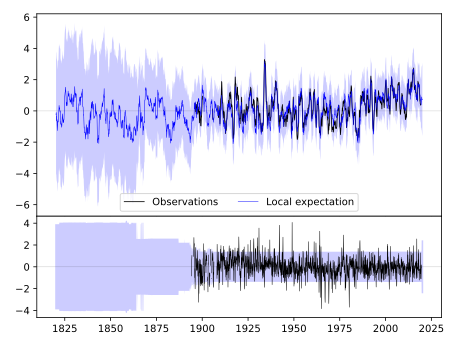
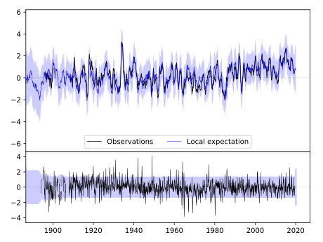
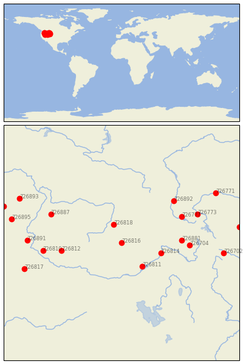

MACKAY LOST RIVER RS [USA]


| Neighbour | Name | Country | Distance | Lon/Lat | Years |
|---|
| 726816 | MACKAY LOST RIVER RS | USA | 0 | -113.6, 43.9 | 1894-2019 |
| 726818 | MAY 2SSE | USA | 81 | -113.9, 44.6 | 1894-2019 |
| 726811 | ABERDEEN EXP STN | USA | 119 | -112.8, 43.0 | 1893-2019 |
| 726814 | IDAHO FALLS | USA | 128 | -112.1, 43.5 | 1905-1980 |
| 726881 | ASHTON 1N | USA | 184 | -111.3, 44.0 | 1894-2019 |
| 726812 | ARROWROCK DAM | USA | 187 | -115.9, 43.6 | 1893-2019 |
| 726704 | ALTA 1 NNW | USA | 208 | -111.0, 43.8 | 1897-2019 |
| 726777 | HEBGEN DAM | USA | 213 | -111.3, 44.9 | 1893-2019 |
| 726892 | NORRIS MADISON PH | USA | 237 | -111.6, 45.5 | 1893-2019 |
| 726810 | NAMPA SUGAR FACTORY | USA | 243 | -116.6, 43.6 | 1864-2020 |
| 726887 | NEW MEADOWS RS | USA | 246 | -116.3, 45.0 | 1893-2019 |
| 726773 | YELLOWSTONE PK MAMMO | USA | 260 | -110.7, 45.0 | 1887-2019 |
| 726891 | VALE | USA | 288 | -117.2, 44.0 | 1892-2019 |
| 726702 | DUBOIS | USA | 316 | -109.7, 43.5 | 1895-2019 |
| 726817 | DANNER | USA | 318 | -117.3, 42.9 | 1897-2019 |
| 726895 | BAKER CITY AP | USA | 348 | -117.8, 44.8 | 1893-2019 |
| 726771 | BIG TIMBER | USA | 353 | -110.0, 45.8 | 1893-2019 |
| 726893 | WALLOWA | USA | 361 | -117.5, 45.6 | 1893-2019 |
| 726700 | CODY | USA | 364 | -109.1, 44.5 | 1895-2019 |
| 726886 | LA GRANDE | USA | 388 | -118.1, 45.3 | 1911-1965 |